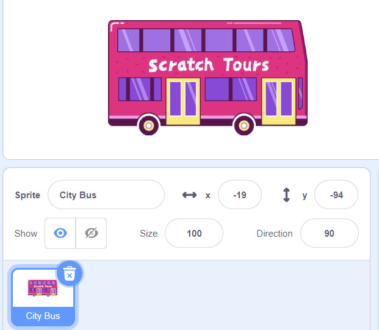
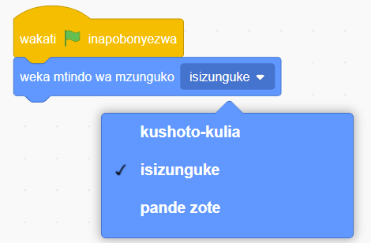

Kielelezo namba 57: ‘Sprite’ ‘City Bus’ akiwa amebaki
7.
Bofya menyu ya bloku za ‘Matukio’.
8.
Buruta na dondosha bloku ya ‘wakati inapobonyezwa’ kwenye eneo la kuandikia.
9.
Bofya menyu ya bloku za ‘Mwendo’.
10.
Buruta na dondosha bloku ya ‘weka mtindo wa mzunguko’ kwenye eneo la kuandikia. Kisha iunganishe kwenye bloku ya ‘wakati inapobonyezwa’. Chagua isizunguke kama inavyoonekana katika Kielelezo namba 58.

Kielelezo namba 58: Bloku ya ‘weka mtindo wa mzunguko’
SAYANSI DARASA LA IV KITABU CHA MWANAFUNZI.indd 154
17/09/2025 13:14